Theme Specimen Book
Orchard Vale Pattern Library
A tabbed field guide to the reusable scenery, panels, heraldry, icons, data pieces, textures, empty states, motion stills, and UI recipes.Scenes & Maps
Backdrops for village-scale interfaces
Use wide scenes for first-viewport atmosphere, map backgrounds for operational dashboards, and controls or markers for location-aware panels.
Scenes & Maps
Large scenic anchors and navigable places
Village Overview Scene
Use for home screens, friendly editorial pages, and first-run onboarding.

Guildhall Planner Scene
Use for project management, work planning, and team coordination demos.

Library Studyhall Scene
Use for research, writing, documents, citations, and knowledge-base screens.
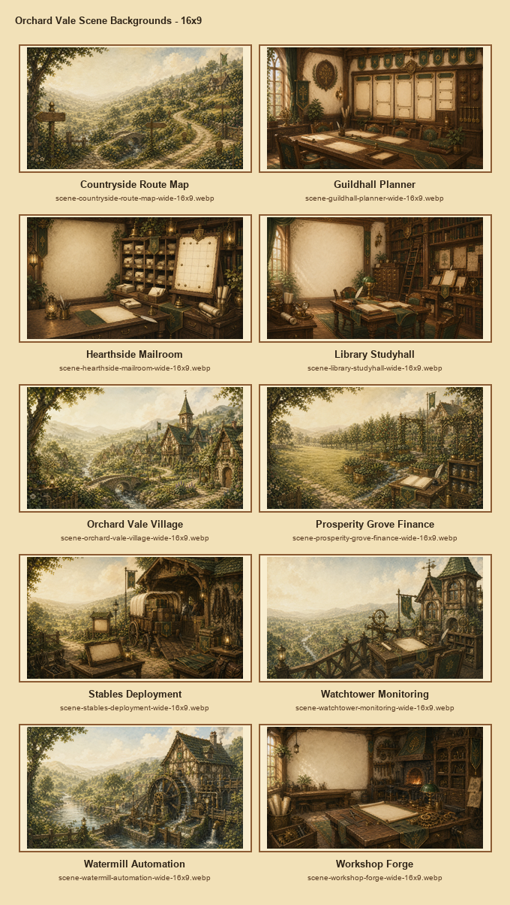
Scene Contact Sheet
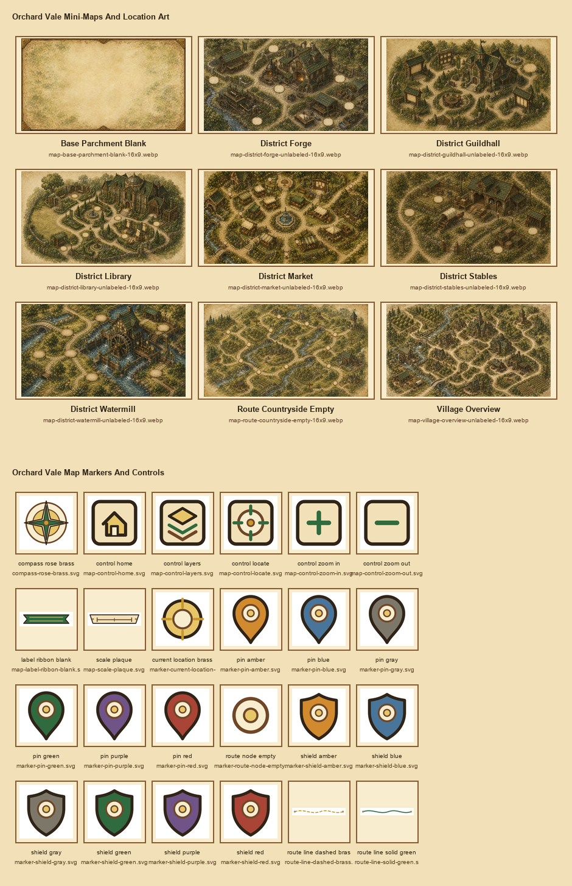
Maps & Controls Contact Sheet

Village Map

Guildhall District

Route Map


Frames & Panels
The layout vocabulary
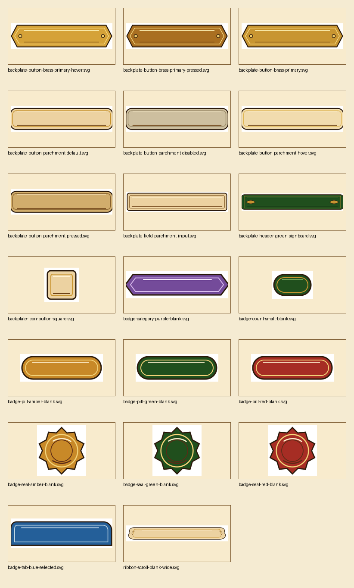
Backplates
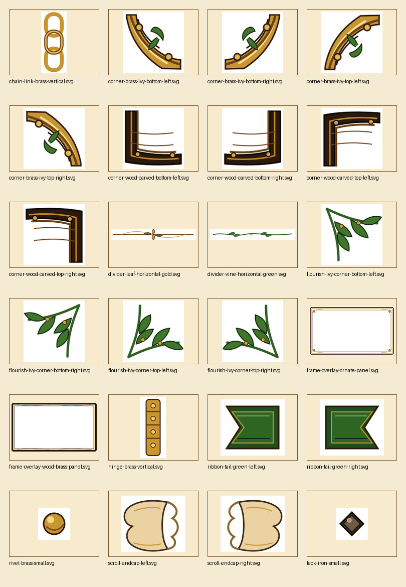
Ornaments
Green Signboard Header
Use for major app sections, lane titles, command rails, and selected panels.
Parchment Card
Use for repeated cards, notes, metrics, detail panels, and readable content blocks.
Ribbon Label
Use for active tabs, saved views, category labels, and banner affordances.
Selected ViewButton States


Crests, Seals & Heraldry
Identity, trust, status, and ritual
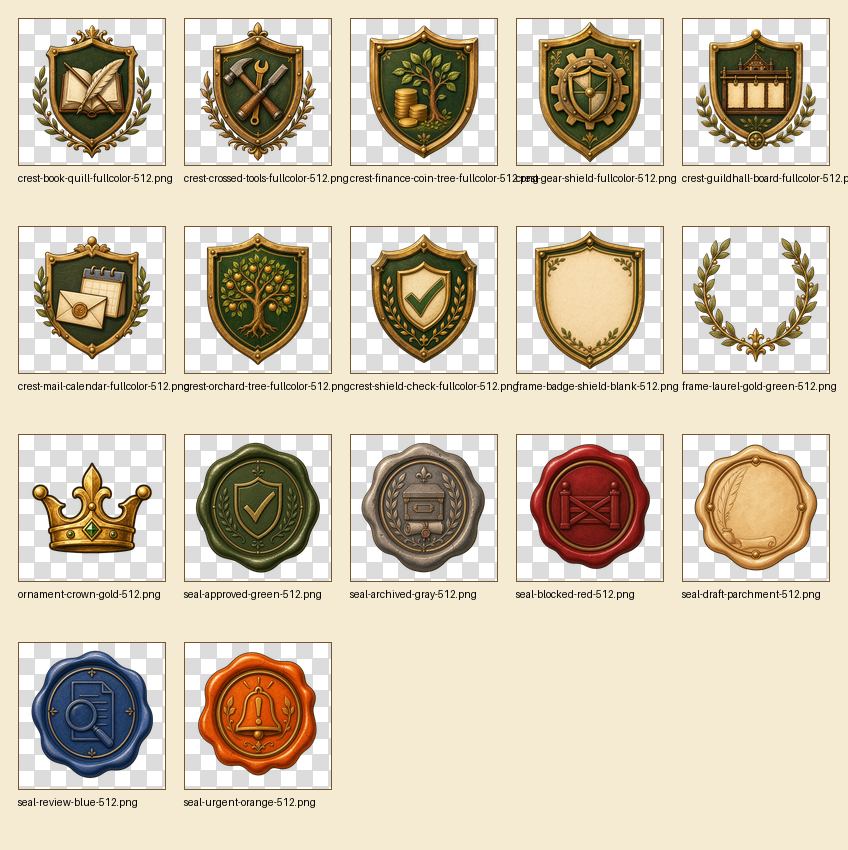
Heraldry Contact Sheet

Application crest
Guildhall Board
Use as page identity or a major workspace mark.


Icons & Motifs
Functional controls and domain symbols
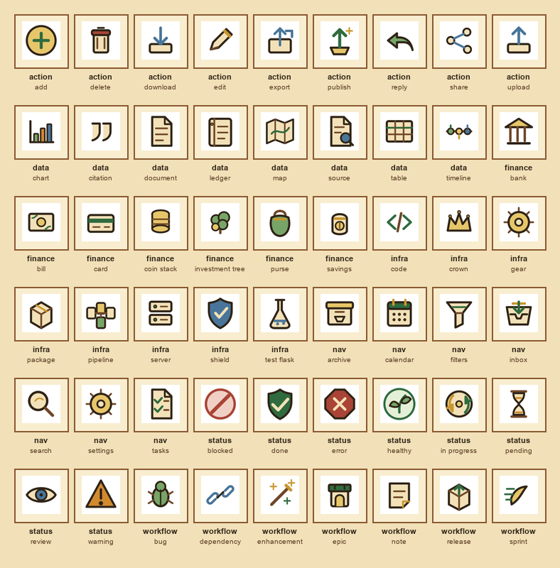
Icon Contact Sheet
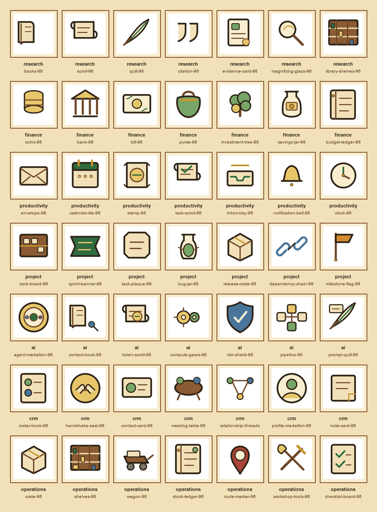
Motif Contact Sheet


Data Visualization
Charts that still feel like Orchard Vale
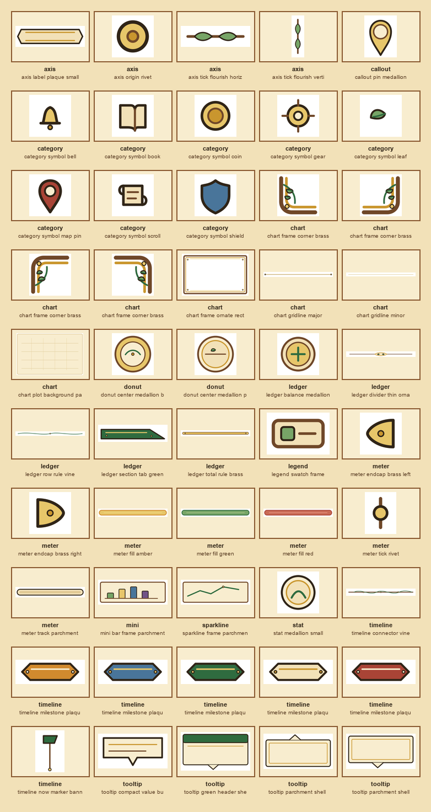
Data Viz Contact Sheet
Ledger Health
Use the SVG pieces as frames, ticks, labels, meters, and callouts around CSS or canvas data.


Textures & Materials
The surface system underneath everything
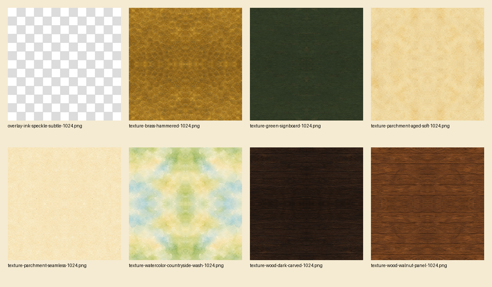
Texture Contact Sheet
CSS Surface Tokens
Use these as background layers under regular CSS color overlays. That keeps the interface readable while preserving the handcrafted paper, signboard, brass, and carved-wood feel.
UI Recipes
Composed patterns ready to adapt
Bridge crew review
Use a parchment body, green header, brass border, and one status icon for readable notices.
94%Healthy Systems
Prepare release notes
 3 subtasks open
3 subtasks open

No matching records
Pair larger empty-state art with concise action text.
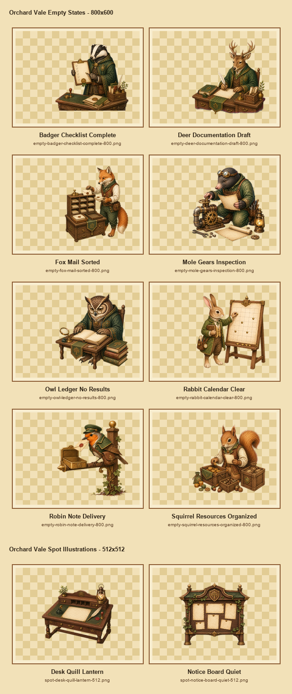
Empty States
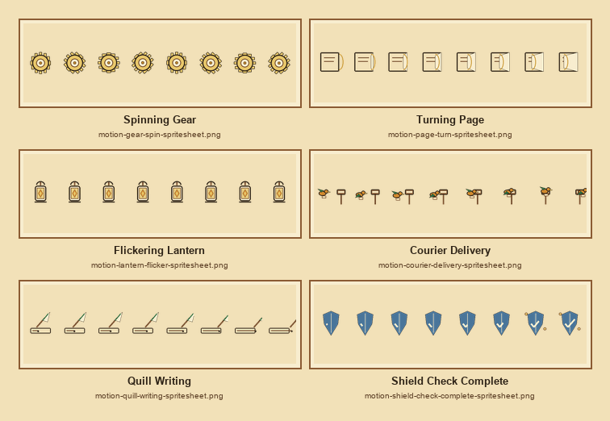
Motion Stills & Sprites


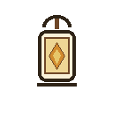